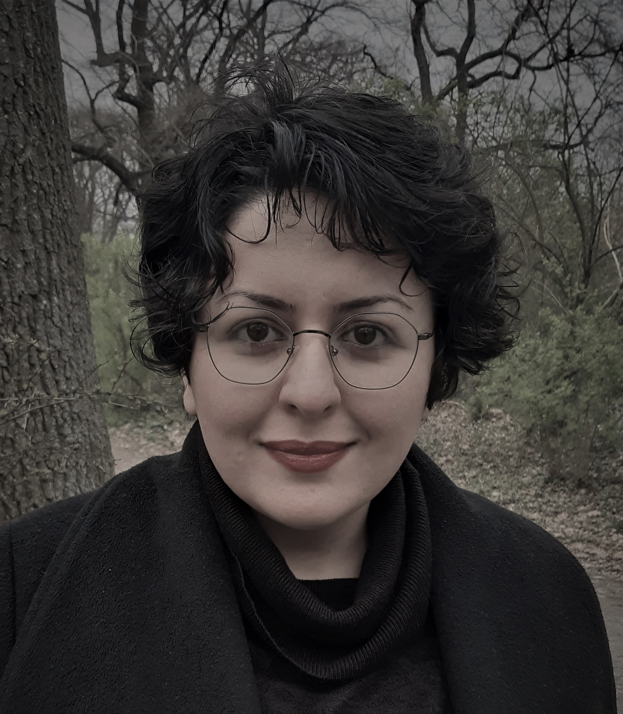

-
 Profile
I am a doctoral candidate in Germany specializing in digital philology. I have spent two years of my PhD in the Department of Computer Science and three years in Ancient History, where I had the opportunity to combine language pedagogy with computer science. Currently, I am in the last stages of my doctorate program, with only a few months left to finish my dissertation.
My research interests include digital humanities, classical philology, historical language pedagogy, translation alignment, and the reception of ancient Greek texts in Persian literature.
Education
-
PhD in Ancient History (October 2019-present)
University of Leipzig, GermanySubject of the Dissertation: Localization of Historical Language Pedagogy through Cross-lingual Annotations: Corpus-based Learning of Ancient Greek in Persian
Master of Arts in Ancient Iranian Languages (September 2014 – July 2017)
University of Tehran, IranSubject of the Dissertation: Grammatical description of the Classical Greek version of Sasanian inscriptions
Bachelor of Arts in Philosophy (September 2009 – July 2014)
Allameh Tabataba'i University, Iran
Teaching
-
Lecturer in Classical Greek (July 2021–Present)
Online independent courses in PersianAs part of my dissertation, I have been teaching Classical Greek to Persian speakers online, from basic to advanced levels. Currently, I am teaching Aeschylus to advanced students on a weekly basis.
Teacher of Persian Language (March 2023-February 2024)
Sächsisches Landesamt für Schule und Bildung, GermanyPersian language pedagogy has a relatively limited history in the German state of Saxony; therefore, in addition to teaching the language at various levels of proficiency, I am also responsible for instructional design and implementation of the teaching resources.
Lecturer in Ancient Greek (September 2022–December 2022)
Tufts University, USAAt Tufts, I had the opportunity to fully design and teach a course based on my own research on localizing teaching resources with various digital annotations including treebanks and parallel corpora. I also put my own modular grammar, "Didakta Grammar for Annotation," to the test. Methods of this course were already in use in Persian and are being translated to Portuguese and Kurdish by colleagues who wish to localize pedagogical resources in their own language.
Lecturer in Classical Greek (October 2018–May 2019)
Institute for Humanities and Cultural Studies, IranIn the two courses that I held in IHCS, I had the chance to incorporate my recently acquired knowledge of digital annotations and methods in my teaching. However, my collaboration with Iranian academic institutions ended when I moved to Germany in June 2019.
Lecturer in Classical Greek (February 2017–June 2018)
Allameh Tabataba'i University and University of Tehran, IranWhen I started teaching Classical Greek at my almae matres, I encountered the limitations of using an English textbook to teach Persian speakers and became interested in localization of language pedagogy. Therefore, I wrote a PhD proposal for Professor Crane, one of the pioneers and most influential researchers of Digital Classics who held positions both at Leipzig University and Tufts University and was accepted as his PhD student.
Awards & Grants
-
DAAD scholarship: Research Grants - Doctoral Program in Germany
October 2019- March 2024